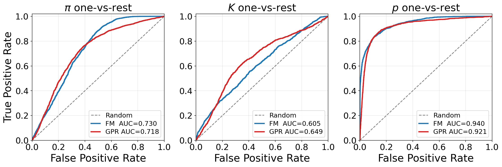
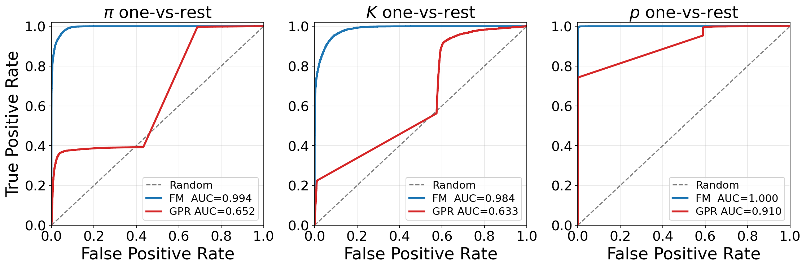
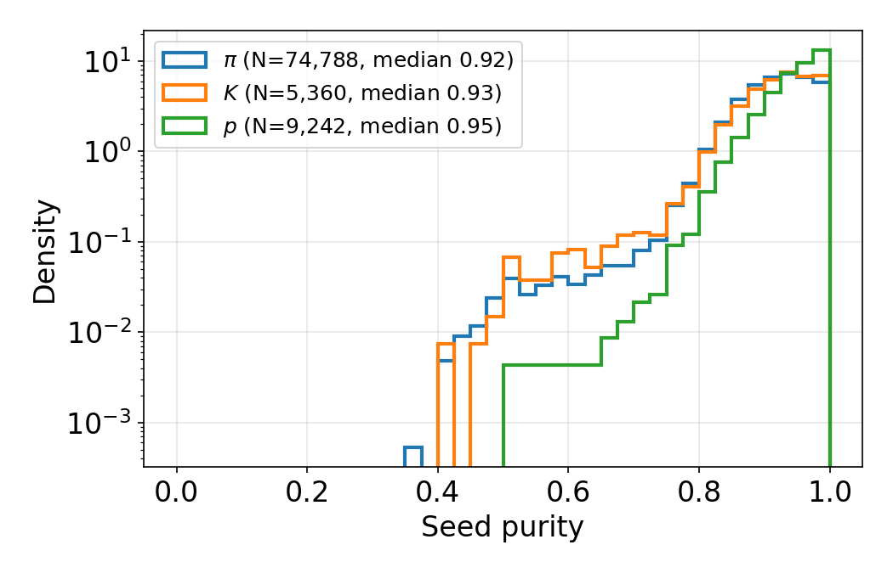
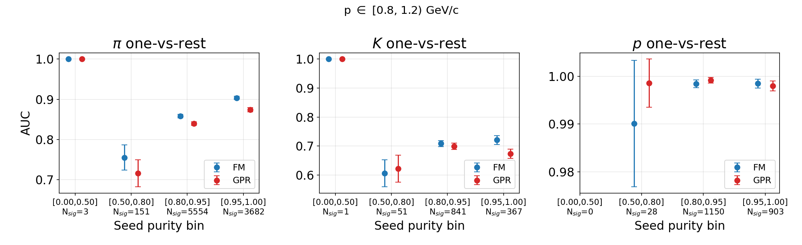
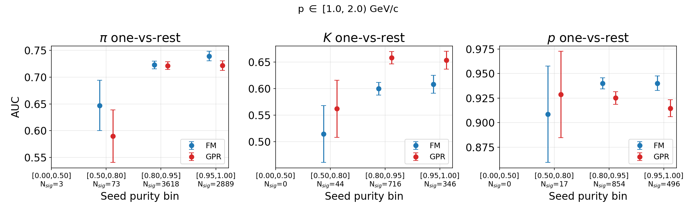
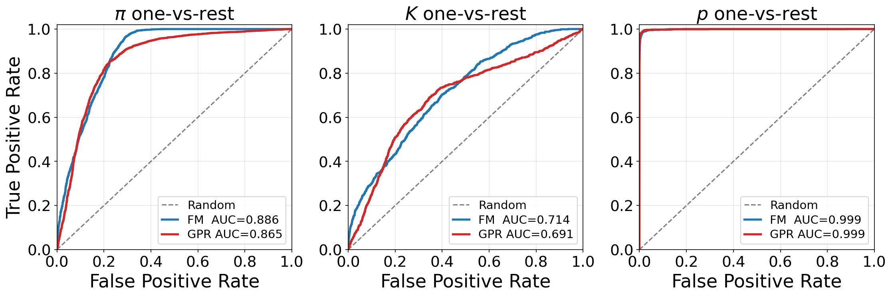
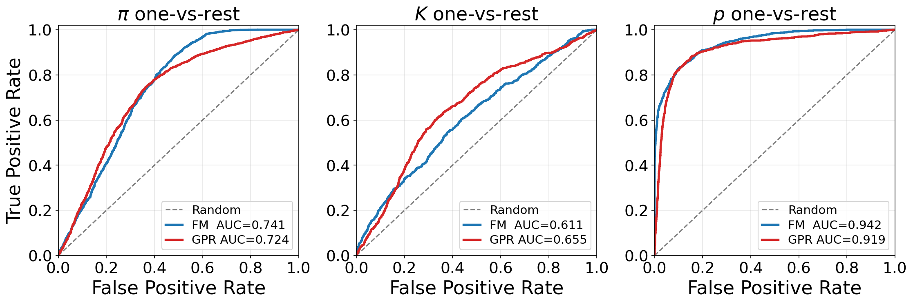

How Gabor's per-cluster FM PID scores were attached to the traditional
sPHENIX reconstruction, where the merged files live, how to use them, and the
FM vs. GPR results on identical reconstructed seeds (including the primary/secondary split).
Repository: /sphenix/user/hwyu/dedx, scripts in fm-vs-gpr/. October 2026.
| Input | Path | Notes |
|---|---|---|
| Traditional reco + truth trees | /sphenix/user/shuhangli/calotrack_tree/macro/condor_pid_x10/OutDir<N>/calotrkana.root, N = 0–24 |
Tree T, 1000 entries per file (25,000 events). Has all reco clusters
(reco_cluster_*) and TPC seeds (tpc_seeds_*). |
| FM per-cluster PID (Gabor) | /sphenix/u/ggalgoczi/FM-PID_ensemble_combiner_run21_25seg.csv.gz |
16,979,350 rows (one per point/cluster), 19,725 events. Columns include
segment, entry, x,y,z, E,
seg_target, pred_assignment, pid_prob_class_0..4. |
FM class convention: 0 = other, 1 = π, 2 = K, 3 = p, 4 = e. The comparison uses classes 1–3.
Implemented in fm-vs-gpr/merge_fm_to_root.py.
(segment, entry) ↔ file OutDir<segment>,
tree entry <entry>. In the CSV, each (segment, entry) maps one-to-one onto
(batch_idx, sample_idx_in_batch), and point_idx runs 0..n−1 within each event.
runnumber = 21 matches "run21" in the file name.
evtnumber is 0 in every entry, so it can't be used as a key.reco_cluster_detid == 2) in (reco_cluster_x, y, z) with a KD-tree. A match is
accepted if the distance is < 1e-3 cm and no other point claims the same cluster.E == reco_cluster_E and
seg_target == reco_cluster_g4hit_trkid (counted and reported; both agree 100%).tpc_seeds_clusters[start_idx : start_idx + nclusters], looked up in
reco_cluster_id. start_idx is the running sum of nclusters (checked per event).tpc_seeds_fm_nclusters_scored counts them.reco_cluster_id.
4,373,248 / 5,182,228 seed clusters (84.4%) have an FM score.Location:
/sphenix/user/hwyu/calotrack_tree/macro/dedx-v2/fm-merged-run21-25seg/
Files: OutDir{0..24}_calotrkana_fm.root (~17 MB each, 426 MB total), plus
merge_stats.csv (per-event match statistics) and merge.log.
Each file holds a classic TTree T with the same 1000 entries in the same order as the
corresponding calotrkana.root, so it can be used on its own or as a friend tree.
| Branch | Per | Meaning |
|---|---|---|
runnumber, evtnumber | event | copied |
fm_has_event | event | 1 if the event is in the FM CSV, else 0 |
nreco_cluster | event | counter (= nRecoClusters) |
reco_cluster_id, reco_cluster_detid | cluster | copied |
reco_cluster_fm_matched | cluster | 1 if an FM point matched this cluster |
reco_cluster_fm_pid_prob_{0..4} | cluster | FM per-point probability; −1 if no FM point |
reco_cluster_fm_seg_target | cluster | FM truth track id (0 if none) |
reco_cluster_fm_pred_assignment | cluster | FM predicted track id (−1 if none) |
ntpc_seeds | event | counter (= nTPCSeeds) |
tpc_seeds_{id, nclusters, start_idx, dedx, maxparticle_pid, maxparticle_p} | seed | copied |
tpc_seeds_fm_nclusters_scored | seed | number of seed clusters with an FM score |
tpc_seeds_fm_pid_prob_{0..4} | seed | mean FM probability over those clusters; −1 if none |
ntpc_seeds_clusters, tpc_seeds_clusters | seed cluster | copied cluster keys |
Regenerate (about 80 s for segment 0, mostly reading the CSV):
source fm-vs-gpr/env.sh
$PY fm-vs-gpr/merge_fm_to_root.py --segments 0-24 \
--outdir /sphenix/user/hwyu/calotrack_tree/macro/dedx-v2/fm-merged-run21-25segenv.sh sets up the sPHENIX alma9.2 stack and $PY, the venv-dev Python with uproot, awkward, scipy and scikit-learn.
import uproot, awkward as ak, numpy as np
t = uproot.open("/sphenix/user/hwyu/calotrack_tree/macro/dedx-v2/"
"fm-merged-run21-25seg/OutDir0_calotrkana_fm.root")["T"]
a = t.arrays(["fm_has_event", "tpc_seeds_maxparticle_pid", "tpc_seeds_maxparticle_p",
"tpc_seeds_dedx", "tpc_seeds_fm_nclusters_scored",
"tpc_seeds_fm_pid_prob_1", "tpc_seeds_fm_pid_prob_2", "tpc_seeds_fm_pid_prob_3"])
ok = (a.fm_has_event == 1) & (a.tpc_seeds_fm_nclusters_scored > 0) # seeds with an FM score
pK = a.tpc_seeds_fm_pid_prob_2[ok] # per-seed FM kaon probability
# FM score used in the comparison: renormalise over pi/K/p
s = a.tpc_seeds_fm_pid_prob_1 + a.tpc_seeds_fm_pid_prob_2 + a.tpc_seeds_fm_pid_prob_3
score_K = (a.tpc_seeds_fm_pid_prob_2 / s)[ok]TFile f("/sphenix/user/shuhangli/calotrack_tree/macro/condor_pid_x10/OutDir0/calotrkana.root");
TTree* T = (TTree*)f.Get("T");
T->AddFriend("F=T", "/sphenix/user/hwyu/calotrack_tree/macro/dedx-v2/fm-merged-run21-25seg/OutDir0_calotrkana_fm.root");
// FM kaon probability of reco seeds whose best-match truth particle is a kaon
T->Draw("F.tpc_seeds_fm_pid_prob_2",
"F.fm_has_event && abs(tpc_seeds_maxparticle_pid)==321 && F.tpc_seeds_fm_nclusters_scored>0");For all 25 segments, build a TChain of the original files and a second TChain of the
merged files in the same segment order, then call AddFriend on the chain.
*_fm_pid_prob_* branch; always require fm_has_event == 1 and
tpc_seeds_fm_nclusters_scored > 0 before using seed FM scores.Script: fm-vs-gpr/compare_same_seeds.py (output in
fm-vs-gpr-2026-10-05-same-seeds-ncl20/). Both methods score the identical seed list and
use the same truth label (|tpc_seeds_maxparticle_pid|, the truth particle with the most clusters on
the seed) and truth momentum (tpc_seeds_maxparticle_p).
| Selection step | Seeds |
|---|---|
| All seeds, OutDir0–24 | 119,324 |
GPR base selection: finite values, dE/dx < 1000, p > 0, π/K/p label, seed nclusters ≥ 20 | 94,957 |
| + event is in the FM sample | 89,391 |
| + at least one seed cluster with an FM score — used | 89,390 |
score_c = L_c·π_c(p) / Σ_k L_k·π_k(p), with
L_c = 1/|dE/dx − μ_c(p)| (band width fixed to 1) and π_c(p) the per-momentum-bin class
fraction. Bands and priors come from the unchanged GPR training (OutDir0–999, ncl ≥ 20, fit 0.5–2.0 GeV/c),
loaded from fm-vs-gpr-2026-10-05-ncl20-evalOutDir0-24/gpr_model_calotrkana-1M-ncl_0.5_2.0_ncl20.csv.score_c = prob_c / (prob_π + prob_K + prob_p).$PY fm-vs-gpr/compare_same_seeds.py --outdir fm-vs-gpr-2026-10-05-same-seeds-ncl20One-vs-rest among π/K/p: for species c, positives are the seeds labelled c and negatives are the seeds
labelled with the other two species, in the same momentum bin (and the same origin/purity subset where
applicable). A single routine, roc_curve_np() in fm-vs-gpr/compare_pid_roc.py, is
used for both methods: seeds are sorted by score (descending), TPR/FPR are accumulated at each distinct
score threshold, and the AUC is the trapezoidal area under (FPR, TPR).
auc_se() in fm-vs-gpr/seed_purity_study.py. With A = AUC, N₊ = number of
positives, N₋ = number of negatives:
Example (GPR, primary-seed kaons in [1,2)): A = 0.631, N₊ = 1,070, N₋ = 6,602 → SE ≈ 0.0097.
Script: fm-vs-gpr/seed_purity_study.py (output in fm-vs-gpr-2026-10-05-seed-purity/).
reco_cluster_g4hit_trkid from the original trees.
Negative ids are G4 secondaries (all present in the event's particle table) and count as
real particles; 0 means no truth (about 2% of TPC clusters).tpc_seeds_maxparticle_pid for 99.96% of seeds.nclusters).$PY fm-vs-gpr/seed_purity_study.py --outdir fm-vs-gpr-2026-10-05-seed-purity| p bin [GeV/c] | Species | Nsig / Ntot | GPR | FM |
|---|---|---|---|---|
| [0.8, 1.2) | π | 9,390 / 12,731 | 0.852 | 0.875 |
| K | 1,260 / 12,731 | 0.695 | 0.713 | |
| p | 2,081 / 12,731 | 0.999 | 0.998 | |
| [1.0, 2.0) | π | 6,583 / 9,056 | 0.718 | 0.730 |
| K | 1,106 / 9,056 | 0.649 | 0.605 | |
| p | 1,367 / 9,056 | 0.921 | 0.940 | |
| [0.0, 1.0)* | π | 67,666 / 79,555 | 0.652 | 0.994 |
| K | 4,125 / 79,555 | 0.633 | 0.984 | |
| p | 7,764 / 79,555 | 0.910 | 1.000 |
* The GPR band is fit over 0.5–2.0 GeV/c and extrapolated below 0.5, so the [0,1) bin is not a fair comparison for GPR.
| p bin | Origin | Species | Nsig / Ntot | GPR | FM |
|---|---|---|---|---|---|
| [0.8, 1.2) | primary | π | 8,258 / 10,143 | 0.774 ± 0.005 | 0.792 ± 0.005 |
| K | 1,193 / 10,143 | 0.676 ± 0.009 | 0.684 ± 0.009 | ||
| p | 692 / 10,143 | 0.999 ± 0.001 | 0.998 ± 0.001 | ||
| secondary | π | 1,132 / 2,588 | 0.947 ± 0.005 | 0.982 ± 0.003 | |
| K | 67 / 2,588 | 0.761 ± 0.034 | 0.799 ± 0.033 | ||
| p | 1,389 / 2,588 | 0.998 ± 0.001 | 0.998 ± 0.001 | ||
| [1.0, 2.0) | primary | π | 5,980 / 7,672 | 0.655 ± 0.007 | 0.644 ± 0.007 |
| K | 1,070 / 7,672 | 0.631 ± 0.010 | 0.587 ± 0.010 | ||
| p | 622 / 7,672 | 0.909 ± 0.008 | 0.927 ± 0.007 | ||
| secondary | π | 603 / 1,384 | 0.860 ± 0.011 | 0.913 ± 0.008 | |
| K | 36 / 1,384 | 0.752 ± 0.047 | 0.647 ± 0.050 | ||
| p | 745 / 1,384 | 0.929 ± 0.007 | 0.939 ± 0.007 |
| Origin | π | K | p |
|---|---|---|---|
| primary | 84.2% | 10.8% | 5.0% |
| secondary | 46.8% | 2.0% | 51.2% |
Purity quantiles (5/25/50/75/95%): 0.82 / 0.89 / 0.93 / 0.96 / 1.00. A purity ≥ 0.5 cut keeps 89,292 seeds (99.9%); purity ≥ 0.9 keeps 60,895 (68.1%). With purity ≥ 0.9:
| p bin | Species | GPR | FM |
|---|---|---|---|
| [0.8, 1.2) | π | 0.865 | 0.886 |
| K | 0.691 | 0.714 | |
| p | 0.999 | 0.999 | |
| [1.0, 2.0) | π | 0.724 | 0.741 |
| K | 0.655 | 0.611 | |
| p | 0.919 | 0.942 |
| Truth origin | TPC clusters | Scored by FM | Share of unscored |
|---|---|---|---|
| primary (id > 0) | 6,625,589 | 98.9% | 4.1% |
| secondary (id < 0) | 12,110,320 | 86.1% | 95.9% |
Images are loaded from the result folders next to fm-vs-gpr/; open this file from the
repository checkout so the relative paths resolve.






= 0.9 ROC, [0.8,1.2)">
= 0.9 ROC, [1,2)">--no-require-fm (all seeds), the GPR AUCs and counts are
identical to the earlier GPR evaluation on OutDir0–24 in all three bins.compare_pid_roc.py and the
table-building refactor of compare_same_seeds.py both reproduce their earlier outputs
pixel-identically.seg_target > 0, i.e. primary truth tracks,
and are not directly comparable to the all-seed numbers here.Path (relative to /sphenix/user/hwyu/dedx) | Purpose |
|---|---|
fm-vs-gpr/merge_fm_to_root.py | Matches FM points to trad clusters and writes the merged ROOT files (§2–3) |
fm-vs-gpr/compare_same_seeds.py | Same-seed selection, GPR and FM scores, ROC plots (§5) |
fm-vs-gpr/seed_purity_study.py | Seed purity, origin split, AUC errors, unscored-cluster breakdown (§6–7) |
fm-vs-gpr/compare_pid_roc.py | Shared ROC routine, GPR training/scoring, plotting |
fm-vs-gpr/make_ncl_root.py | Re-skims the trad trees with tpc_seeds_nclusters (GPR training/eval files) |
fm-vs-gpr/env.sh | Environment setup ($PY) |
fm-vs-gpr-2026-10-05-same-seeds-ncl20/ | Same-seed results: plots, AUC tables, per-seed scores, README |
fm-vs-gpr-2026-10-05-seed-purity/ | Purity / origin results: plots, auc_by_origin.csv, auc_vs_purity.csv, README |
/sphenix/user/hwyu/calotrack_tree/macro/dedx-v2/fm-merged-run21-25seg/ | Merged ROOT files, merge_stats.csv, merge.log |